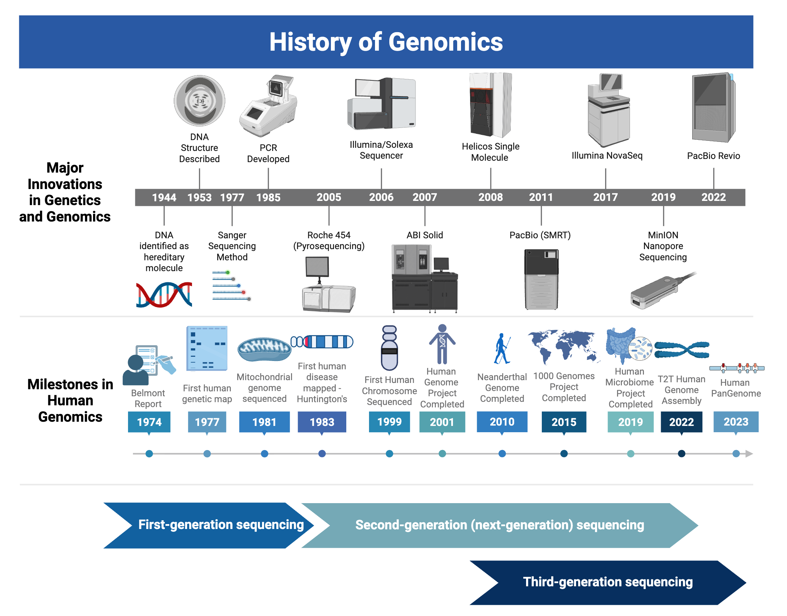
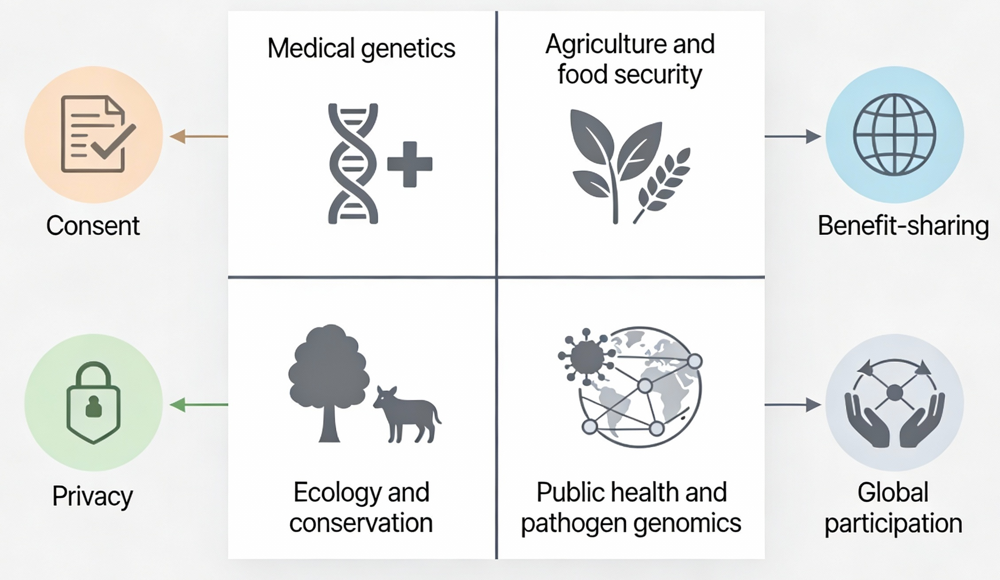

1 Reading Genomes: What Bioinformatics Is For
1.1 Genomics timeline: from Sanger to the data deluge
Modern genome analysis traces back to the development of DNA sequencing methods in the 1970s, which made it possible to determine the nucleotide sequence of individual genes and small genomes for the first time1;2. Over subsequent decades, improvements in chemistry and automation enabled large‑scale projects such as the Human Genome Project, which produced the first high‑quality human reference genome and marked the beginning of the “genomic era”1;2.
In the roughly twenty‑five years since the first complete animal and plant genomes were published, sequencing technologies have advanced from low‑throughput Sanger methods to high‑throughput short‑read platforms and, more recently, long‑read technologies that generate much longer sequences at scale3;4. These advances have produced thousands of animal and hundreds of land‑plant genome assemblies, but current references still cover only a small fraction of described species and are unevenly distributed across the tree of life3;4.

This figure presents a timeline of key technological innovations and landmark projects that shaped modern genomics, from the recognition of DNA as the hereditary material and the description of its double‑helix structure through the development of PCR, first‑generation Sanger sequencing, and early automated sequencers. It then highlights the launch and 2001 completion of the Human Genome Project and related large‑scale efforts, such as the generation of reference genomes for multiple organisms and subsequent population‑scale initiatives like the 1000 Genomes Project and the Human Microbiome Project, which collectively established comprehensive genomic resources for research and medicine. The upper portion of the figure tracks the transition from low‑throughput first‑generation methods to second‑generation short‑read platforms and, more recently, to third‑generation long‑read technologies such as single‑molecule real‑time and nanopore sequencing, which now enable routine production of near‑complete, reference‑quality assemblies, including end‑to‑end human genomes.
This figure visually anchors the historical narrative for later chapters where we will go into these technologies and research milestones in more depth throughout this course. Created in BioRender.
1.2 Core concepts: genomes, omes, and basic operations
For this course, the genome is the complete DNA sequence of an organism, typically organized into chromosomes, and including both coding and noncoding regions1,5. The transcriptome is the collection of RNA molecules transcribed from the genome under specific conditions, and the proteome is the set of proteins produced from those transcripts; together they connect static DNA sequence to dynamic cellular phenotypes1,5.
Beyond sequence alone, the epigenome captures chemical and structural modifications (such as DNA methylation and chromatin state) that affect how accessible different genomic regions are without changing the underlying bases6. Modern genome analysis often integrates these layers to understand how genomic sequence, gene expression, and epigenetic regulation combine to produce organism‑level traits1,6.
A reference genome is a community standard assembly for a species (or strain) that serves as a coordinate system for mapping reads, annotating genes, and comparing individuals3,4. A genome assembly is the specific reconstruction of a genome from sequencing reads for a given project, usually summarized by its size, contiguity (for example, N50), and completeness; an annotation is the set of predicted and curated genomic features such as genes, transcripts, and regulatory elements placed on that assembly3,4.
Two core computational operations recur throughout this course. Alignment is a process that refers to the maping of reads or sequences to a reference genome to determine their physical location in the genome. This step is key in enabling variant calling, coverage analysis, and many downstream inferences1. De novo assembly instead stitches reads together based on sequence overlap or graph structure to reconstruct longer contiguous sequences without relying on a close reference, which is essential for new or highly divergent genomes and for resolving structural complexity3. Both processes are necessary to expand our understanding of genomes and require various bioinformatics tools.

Typical eukaryotic gene model illustrating exons and introns along a genomic region (A). Schematic of core “omes” for a single cell: DNA as the genome, transcribed RNA molecules as the transcriptome, translated polypeptides as the proteome, and chromatin with chemical modifications representing the epigenome (B). Reference-based alignment, showing sequencing reads stacked over a reference genome coordinate axis (C). Genome assembly, in which clusters of overlapping reads form contigs that are joined into an assembled scaffold (D). Created with BioRender.com.
1.3 Why bioinformatics exists
As sequencing costs have fallen, generating genome‑scale data has become easier and cheaper than analyzing, storing, and interpreting it, creating a bioinformatic bottleneck in many projects2,6 (see Figure 1.3). The price of whole‑genome sequencing has dropped orders of magnitude since the Human Genome Project, but high‑quality analysis still requires computational expertise, careful data management, and appropriate statistical methods6. At the same time, public repositories, such as GenBank, have grown to tens of trillions of bases and billions of sequences, so simply storing and querying genomic data has become a large‑scale data‑management challenge (genomic databases will be revisited in Chapter 4).
This data deluge is often compared to Moore’s law, which describes a long-term trend in the computer hardware industry that involves the doubling of ‘compute power’ every two years. Technology improvements that ‘keep up’ with Moore’s Law are widely regarded to be doing exceedingly well, making it useful for comparison. Sequencing prices have fallen by more than six orders of magnitude since the Human Genome Project (see Figure 1.1), easily outpacing these expected trends in improvements to general computing hardware (NHGRI DNA Sequencing Costs).
At the same time, concerns about a reproducibility crisis in biomedical and computational research have highlighted the need for transparent, well‑documented workflows1. In genomics, this includes clearly recording data sources and metadata, tracking software versions and parameters, using version control and scripted pipelines where possible, and depositing both data and code in accessible repositories so that others can repeat and extend analyses1,3,4.
The software and methods landscape in bioinformatics changes rapidly: new alignment algorithms, variant callers, assemblers, and visualization tools appear frequently, while older tools may become unsupported or superseded1,5. A central goal of this course is therefore not mastery of any single program but adaptability—the ability to read documentation, reason about how a tool fits into a workflow, evaluate whether its assumptions match a given dataset, and switch approaches as technologies and best practices evolve5,6. This rapid pace is also the reason we do not have a standardized textbook for this course. Instead, I have compiled various resources into this single course companion. Much of this textbook relies heavily on an excellent textbook last updated in 20151. You will see this text cited throughout and some of the content comes directly from this text. But much of that is outdated and has been significantly supplemented with primary scientific literature as well as recent review articles. As much as possible, I will try to provide the references so that you can dive deeper on any of these topics.

From data generation to interpretation and publication. Sequencing instruments generate large volumes of raw DNA reads from prepared libraries, a step that is now relatively easy to purchase and scale. The resulting data must then pass through a bottleneck of data cleaning, filtering, and analysis—where analysts perform quality control, alignment or assembly, and downstream processing while maintaining documentation, reproducible code, and version control. Finally, cleaned and analyzed results are interpreted, visualized, and synthesized into figures, genomic summaries, and manuscripts for publication and broader communication. Created with BioRender.com.
1.4 What makes someone a “bioinformatician”?
Bioinformatics can be approached through many different workflows—web interfaces, command‑line tools, scripted analyses in languages like R or Python, and now AI‑assisted systems—and this course aims to give students a broad survey of that landscape rather than endorsing a single “best” way to do bioinformatics.
Multiple ways to “do genomics”: For some people, doing bioinformatics means interactively exploring genome browsers or running analyses through web portals like Galaxy; for others, it means managing workflows on Linux clusters, writing code, or curating databases and infrastructure, and all of these activities fall under the very broad genomics umbrella.
Job descriptions in the field range from analysts and software developers to computational biologists and AI bioinformatics engineers, illustrating that bioinformatics is defined more by the biological questions and data than by any fixed skillset or toolchain.
Web tools, command line, and pipelines: Web‑based resources such as NCBI, Ensembl, UCSC Genome Browser, Galaxy, and similar portals make it possible to query databases, visualize genomes, and run common analyses without local installation, which is especially useful for new users and occasional genomics work.
Command‑line tools, workflow managers (for example, Nextflow or Snakemake), and scripted pipelines support large‑scale, automated, and reproducible analyses when projects or datasets grow more complex, but they demand more technical setup and comfort with Unix‑like environments.
R and recent advances: Modern R ecosystems—exemplified by Akalin’s Computational Genomics with R5, which introduces Bioconductor workflows, genomic intervals, and high‑throughput sequencing analyses—show how a general‑purpose language can connect statistical modeling, visualization, and domain‑specific genomics packages in a single environment.
In this course R will appear in selected examples and advanced modules (rather than as a primary focus) to highlight these newer genomics capabilities and to give interested students a starting point if they wish to pursue more scripted, R‑based analysis later.
AI as an emerging bridge: New AI‑driven platforms and multi‑agent systems can help design, execute, and document bioinformatics workflows, lowering the learning curve for building reproducible pipelines by suggesting tools, generating code, and tracking parameters automatically.
These approaches do not replace traditional skills but offer another path into genomics work, especially for students who are more comfortable describing goals in natural language than writing full pipelines from scratch.
How this course uses these ecosystems: This course was originally designed before current AI and tooling advances, and newer R‑based genomics workflows. Therefore, AI‑assisted workflows, and updated R resources are being integrated incrementally while preserving the core emphasis on concepts and data literacy.
Students will be exposed to web‑based tools, the Unix command line, and examples of scripted analyses, including some in R, and are encouraged to share outside resources that offer clearer or simpler solutions, reinforcing that there are many valid ways to contribute to genomics and that “doing bioinformatics” does not have to look the same for everyone.
1.5 Types of Genome Analysis Research Projects
Genome analysis underpins a wide range of applications in medical genetics, including identifying variants that contribute to Mendelian disorders, studying complex disease risk, and informing targeted therapies6. In agriculture, genomic selection and genome‑wide association studies accelerate breeding by linking genetic markers to traits such as yield, stress tolerance, and disease resistance in crops and livestock4. The role of computational biologists varies significantly too, from support staff to project leaders7.
In ecology and evolution, reference genomes and population‑scale sequencing allow researchers to study adaptation, speciation, and biodiversity at unprecedented resolution, including for non‑model organisms3,4. In public health, genomic surveillance of pathogens supports outbreak tracking, antimicrobial resistance monitoring, and the design of diagnostics and vaccines6 (Figure 1.4).
1.5.1 Three perspectives on genomics and bioinformatics
One way to organize this diversity is to think about three complementary “views” of bioinformatics and genomics, moving from small to large scales1.
Cell: At the molecular level, genomics focuses on DNA (the genome), RNA (the transcriptome), and proteins (the proteome). Questions at this scale include: What genes and transcripts exist? How are they regulated? How do they interact in pathways and networks? Many functional genomics tools (e.g., RNA‑seq, ChIP‑seq) are designed to answer questions at this cellular scale1.
Organism: At the level of an individual, genomics asks how the same genome produces different phenotypes across tissues, developmental stages, environments, and disease states. Typical projects compare gene expression or other genomic features across conditions (for example, healthy vs. diseased tissue, or individuals exposed to different environments) to understand how genomes respond to internal and external signals1.
Tree of life: At the largest scale, comparative genomics uses genome sequences from many species to study phylogeny, genome structure, and macroevolutionary processes such as gene family expansion, whole‑genome duplication, and chromosomal rearrangements. These studies emphasize both the shared molecular “toolkit” of life and the ways genomes are shaped by adaptation to different environments1,3,4.
The required readings for this week highlight this tree‑of‑life perspective. One paper surveys the current state of animal genome sequencing across the animal kingdom, quantifying which lineages have reference genomes and how assembly quality has improved over time3. The complementary plant genomics paper summarizes 20 years of land‑plant genome sequencing, showing how taxonomic coverage, assembly quality, and global participation have changed, and pointing out important gaps and inequities in who is leading and benefiting from plant genomics projects4.
1.5.2 Hypothesis‑driven and discovery‑driven genomics
As sequencing has become cheaper and datasets have grown larger, most impactful genomics studies now go beyond a single genome assembly or alignment. Instead, they combine substantial data generation with either explicit hypothesis testing, open‑ended discovery, or (ideally) both1,8.
In hypothesis‑driven genomics, researchers start with specific predictions (for example, that a gene family will be more expanded in species from colder environments) and design sampling, sequencing, and statistical analyses to test those predictions. These projects emphasize careful experimental design, replication, and rigorous statistical models to distinguish signal from noise1.
In discovery‑driven genomics, researchers focus on exploring new genomes or large datasets to see what patterns emerge, often without a single predefined “main” hypothesis. Examples include assembling genomes for under‑studied clades, cataloging structural variation, or visualizing complex expression or variant datasets to identify unexpected clusters or associations. This exploratory work is especially important in genomics, where high‑dimensional data can contain many unanticipated signals3,4,8.
Both modes are valuable and interdependent. Exploratory analyses are often where new ideas and hypotheses come from, while hypothesis‑driven analyses are essential for testing those ideas and connecting genomic patterns to mechanisms8. Throughout the course, you will see studies that move back and forth between these modes.
- Lab01 (Section Section 15.1) asks you to find and describe a genome analysis paper, then classify it using the three perspectives introduced in this chapter and the ideas of hypothesis‑driven versus discovery‑driven genomics1,3,4.
- If you would like a refresher on how to read scientific papers, Appendix A walks through hypothesis identification, concept mapping, and designing follow‑up experiments using an example scientific article on albinism9.
These lab activities reinforce the high‑level view of genomics developed in this chapter and prepare you for later, more technical labs.
1.5.3 Looking ahead: case studies that span scales
Early next week, you will read a recent genomics paper on antifreeze proteins in polar and deep‑sea fishes that illustrates how these ideas come together10. Without going into detail here, that study:
- Uses high‑quality genome assemblies and comparative analyses across many species (tree‑of‑life perspective).
- Examines how gene families and genome structure relate to environmental variables such as temperature and depth (organism and environment).
- Combines exploratory genome‑scale analyses (discovery‑driven) with explicit statistical tests of how gene copy number and genomic location change across species and habitats (hypothesis‑driven).
As you read it, you will be able to connect the analyses in that paper to the three perspectives (cell, organism, tree of life) and to the balance between hypothesis‑driven and discovery‑driven genomics discussed above.
These opportunities come with ethical, legal, and social questions (Figure 1.4). For human data, key concerns include informed consent, privacy, data security, and the potential for misuse or discrimination based on genetic information6. For non‑human genomics, recent assessments of animal and plant genome projects have emphasized inequities in who leads sequencing efforts, how benefits and credit are shared, and how historical patterns of colonialism and “parachute science” continue to shape access to biodiversity and genomic resources3,4.
International agreements and community norms now guide data sharing and equity considerations, encouraging collaborations that involve local researchers, respect Indigenous knowledge, and support capacity building in regions where study species are found3,4. Throughout the course, case studies such as long‑term animal and plant genome surveys will be used to discuss how technical decisions, sampling strategies, and authorship practices connect to these broader ethical themes2–4.

A four‑quadrant schematic illustrates major application areas of genomics: medical genetics (top left), agriculture and food security (top right), ecology and conservation (bottom left), and public health and pathogen genomics (bottom right). Each quadrant contains simple domain‑specific icons (for example, DNA and a clinical symbol, crop plants, ecosystems, and pathogens) to emphasize the diversity of contexts in which genomic data are generated and used. Surrounding the central square, icons for consent, privacy, benefit‑sharing, and global participation highlight that technical choices in genomic research and applications are embedded within ethical, legal, and social frameworks that should be considered across all domains. Figure concept and artwork generated with an AI‑assisted illustration tool.
1.6 Ethics spotlight – timelines, cases, and trust
Note: The goal of this section is to situate genomics in its historical and ethical context in a factual, objective way, without assigning blame to students or asking them to endorse any particular viewpoint.
The timeline in Figure 1.1 begins the story of milestones in human genomics with the Belmont Report11, developed after a series of widely criticized research practices including the Tuskegee syphilis research study. In that study, conducted in Alabama, effective treatment was withheld from Black men with syphilis; the case is now frequently cited in bioethics as a reason for today’s requirements for informed consent and ongoing oversight of human‑subjects research12.
Several later examples illustrate how questions about consent, privacy, and benefit sharing continue to arise in genetics and genomics. Henrietta Lacks’s cervical tumor cells were collected in 1951 without her knowledge or consent, leading to the HeLa cell line and, decades later, to debates about privacy and family involvement when her cells and genome sequence were shared widely13–15. Members of the Havasupai Tribe in Arizona provided blood samples for diabetes research and later learned their samples had also been used in studies of topics such as schizophrenia and population origins, prompting a lawsuit, a 2010 settlement, and renewed discussion of how consent forms describe future uses of samples16. Human subject research is now strictly regulated, even in the context of survey-based work, through institutional review boards (IRB) that have guidelines to protect consent and reduce harm17. At Auburn, the AU Human Research Protection Program is responsible for the ethical and regulatory requirements related to the protection of human participants in research. The Program includes the Institutional Official (IO; Senior Vice President for Research & Economic Development), the Institutional Review Board (IRB) for the protection of human subjects in research, and the Office of Research Integrity & Compliance (ORIC).
Genomics today includes many different projects, from large biobanks to smaller disease or population studies, and these efforts depend on volunteered samples and trust that data will be used and shared in ways consistent with what participants and communities were told6. International plant and animal genomics projects also raise questions about benefit sharing, authorship, and power imbalances between institutions and the regions or communities that provide samples3,4.
This course does not require students to agree with any particular ethical position, but it does present these well‑documented cases as background for understanding why modern genomics emphasizes informed consent, privacy protections, and clear communication about how data may be used. Later chapters briefly revisit these themes in connection with topics like data sharing and genome‑wide studies; students are welcome—but not required—to explore the broader ethical literature or related historical discussions if they are interested.
1.7 Course roadmap: “reading genomes” over the semester
This course is organized around the idea that reading genomes is a multi‑step process: learning the language of sequences and formats, understanding how different technologies generate data, and practicing how to transform raw reads into biological insight1;5. Lectures and readings provide conceptual foundations, while labs and projects give hands‑on experience with real data and tools5.
Early labs focus on basic data formats, quality control, and simple workflows for short‑read data, building toward more complex analyses of alignment, variant calling, and genome annotation later in the semester1. A semester‑long genome analysis project asks each student or group to design and execute a focused analysis (for example, on a chosen genome or dataset), document their workflow in a reproducible way, and present their findings, mirroring how modern genomics research is carried out.
In parallel, a mock grant review panel assignment exposes students to how genomics proposals are evaluated: what makes a question compelling, whether the proposed analyses are appropriate and feasible, and how reviewers weigh innovation, rigor, and broader impacts. Together, these components—lectures, integrated readings, labs, the project, and the review panel—are designed to help students move from passively reading about genomes to actively reading, analyzing, and critiquing genomic data and studies.
1.8 A Consistent Example
Throughout the semester, the class will return again and again to a single yeast genome sequence dataset, following it from raw sequencing reads all the way to biological interpretation. The dataset comes from an experimental evolution study in Saccharomyces cerevisiae in which populations were propagated for many generations under defined conditions, allowing standing genetic variation to be reshaped by selection in a controlled laboratory environment18. To keep the full workflow manageable, the course uses the compact sacCer3 reference genome (about 12 Mb across 16 chromosomes), which makes it feasible to run industry-standard bioinformatics workflows on the high-performance computing cluster within realistic time and memory limits.
In Lab 4, you will download the yeast reads from the NCBI SRA accession SRR1693691, perform initial quality control with FastQC, trim away low-quality bases and adapters, and align the cleaned reads to sacCer3, ending with an indexed BAM file and basic coverage and mapping statistics. In Lab 7, you will pick up the same alignment file to mark PCR duplicates, run additional QC checks such as samtools flagstat and MultiQC, and then use GATK’s “best practices” variant calling workflow to generate and filter a set of SNPs, comparing different hard-filtering thresholds and visual summaries of variant quality metrics. In Lab 9, you will load both the pre- and post-filtering BAM files and the resulting VCFs into IGV, visually inspect specific regions of the genome, and decide which candidate variants look like real evolutionary changes versus sequencing or mapping artifacts, interpreting those variants in terms of coding changes and potential functional consequences for the yeast.
Most of the heavy lifting on the command line will be handled by provided shell scripts, so students can focus on understanding what each step does and what each output means rather than on debugging complex pipelines from scratch. The overarching goals are to help them feel comfortable working with real whole-genome data on a high-performance cluster, to connect the dots between textbook methods and concrete files like FASTQ, BAM, and VCF, and to practice reading genomes as biological documents—writing clear methods, reporting variants in a biomedical context, and reasoning about how specific genetic changes might shape evolutionary trajectories in a model eukaryote.
More on the GATK workflow and these file formats can be found in subsequent chapters, so do not worry so much about the details right now. You can also read more about this semester dataset in Appendix C.
1.9 Looking ahead to Chapter 2
Chapter 2 builds directly on this foundation by unpacking the sequencing technologies behind the timeline in Figure 1.1. It introduces first‑, second‑, and third‑generation sequencing platforms, compares Illumina, PacBio, and Oxford Nanopore data, and connects platform choice to alignment, de novo assembly, and experimental design. The goal is to give you a single, integrated reference for sequencing technologies and data so that later chapters on algorithms and applications have a concrete foundation.
1.10 Reflection questions
You can use the following questions to reflect on the concepts and papers introduced in this chapter. These are intended for after you have finished the chapter and associated readings. Some of these will lead directly into future lab assignments.
Three perspectives: For a genomics study you have encountered (in this course or elsewhere), which perspective is most prominent: cell, organism, or tree of life? What specific datasets or analyses support your answer?
Multiple scales: How does that study connect at least two of the three perspectives (for example, using cellular‑scale data to answer organism‑level or tree‑of‑life questions)?
Discovery vs. hypothesis: Identify one example of discovery‑driven analysis (exploration of data without a single, predefined main hypothesis) and one example of hypothesis‑driven analysis (explicit testing of a stated prediction) from the assigned readings (animal genomes3, plant genomes4, or the antifreeze‑protein paper you will read next week10). How do these approaches complement each other?
Data and methods: In the animal and plant genomics overview papers, what kinds of data (for example, reference genomes, metadata) and methods (for example, phylogenetic analyses, summary statistics across taxa) are needed to draw conclusions about progress and gaps across the tree of life3,4? How do these differ from the data and methods needed to investigate a specific gene family, such as antifreeze proteins10?
Equity and participation: Both the animal and plant genomics overview papers highlight mismatches between where species are found, where sequencing work is done, and who leads that work3,4. What are some concrete ways that future genomics projects could promote more equitable collaboration and benefit‑sharing?
Future directions: Imagine you are designing a new genomics project. How would you balance hypothesis‑driven goals (specific questions you want to test) with discovery‑driven goals (opening space for unexpected findings)? Which of the three perspectives (cell, organism, tree of life) would your project emphasize first, and how might you connect to the others as your work develops?